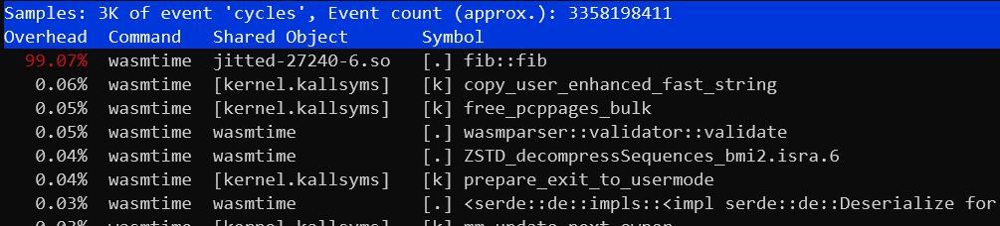

Using perf on Linux
One profiler supported by Wasmtime is the perf
profiler for Linux. This is
an extremely powerful profiler with lots of documentation on the web, but for
the rest of this section we'll assume you're running on Linux and already have
perf installed.
Profiling support with perf uses the "jitdump" support in the perf CLI. This
requires runtime support from Wasmtime itself, so you will need to manually
change a few things to enable profiling support in your application. First
you'll want to make sure that Wasmtime is compiled with the jitdump Cargo
feature (which is enabled by default). Otherwise enabling runtime support
depends on how you're using Wasmtime:
-
Rust API - you'll want to call the [
Config::profiler] method withProfilingStrategy::JitDumpto enable profiling of your wasm modules. -
C API - you'll want to call the
wasmtime_config_profiler_setAPI with aWASMTIME_PROFILING_STRATEGY_JITDUMPvalue. -
Command Line - you'll want to pass the
--jitdumpflag on the command line.
Once jitdump support is enabled, you'll use perf record like usual to record
your application's performance. You'll need to also be sure to pass the
--clockid mono or -k mono flag to perf record.
For example if you're using the CLI, you'll execute:
$ perf record -k mono wasmtime --jitdump foo.wasm
This will create a perf.data file as per usual, but it will also create a
jit-XXXX.dump file. This extra *.dump file is the jitdump file which is
specified by perf and Wasmtime generates at runtime.
The next thing you need to do is to merge the *.dump file into the
perf.data file, which you can do with the perf inject command:
$ perf inject --jit --input perf.data --output perf.jit.data
This will read perf.data, automatically pick up the *.dump file that's
correct, and then create perf.jit.data which merges all the JIT information
together. This should also create a lot of jitted-XXXX-N.so files in the
current directory which are ELF images for all the JIT functions that were
created by Wasmtime.
After that you can explore the perf.jit.data profile as you usually would,
for example with:
$ perf report --input perf.jit.data
You should be able to annotate wasm functions and see their raw assembly. You should also see entries for wasm functions show up as one function and the name of each function matches the debug name section in the wasm file.
Note that support for jitdump is still relatively new in Wasmtime, so if you have any problems, please don't hesitate to file an issue!
perf and DWARF information
If the jitdump profile doesn't give you enough information by default, you can
also enable dwarf debug information to be generated for JIT code which should
give the perf profiler more information about what's being profiled. This can
include information like more desriptive function names, filenames, and line
numbers.
Enabling dwarf debug information for JIT code depends on how you're using Wasmtime:
-
Rust API - you'll want to call the
Config::debug_infomethod. -
C API - you'll want to call the
wasmtime_config_debug_info_setAPI. -
Command Line - you'll want to pass the
-gflag on the command line.
You shouldn't need to do anything else to get this information into perf. The
perf collection data should automatically pick up all this dwarf debug
information.
perf example
Let's run through a quick example with perf to get the feel for things. First
let's take a look at some wasm:
fn main() { let n = 42; println!("fib({}) = {}", n, fib(n)); } fn fib(n: u32) -> u32 { if n <= 2 { 1 } else { fib(n - 1) + fib(n - 2) } }
To collect perf information for this wasm module we'll execute:
$ rustc --target wasm32-wasi fib.rs -O
$ perf record -k mono wasmtime --jitdump fib.wasm
fib(42) = 267914296
[ perf record: Woken up 1 times to write data ]
[ perf record: Captured and wrote 0.147 MB perf.data (3435 samples) ]
$ perf inject --jit --input perf.data --output perf.jit.data
And we should have all out information now! We can execute perf report for
example to see that 99% of our runtime (as expected) is spent in our fib
function. Note that the symbol has been demangled to fib::fib which is what
the Rust symbol is:
$ perf report --input perf.jit.data

Alternatively we could also use perf annotate to take a look at the
disassembly of the fib function, seeing what the JIT generated:
$ perf annotate --input perf.jit.data